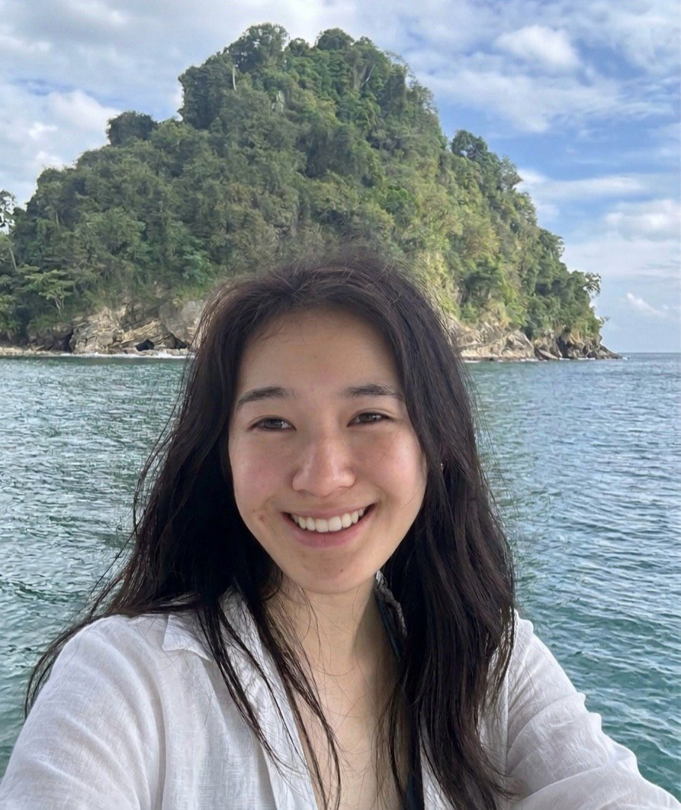

Huiyi Yang
Computer Science · NYU Shanghai
About me
I’m a senior in CS at NYU Shanghai, working with Prof. Chen Feng at the AI4CE Lab, and applying for Fall 2027 PhD and MS programs.
I work on turning captured reality into 3D worlds that can move.
- Education
- B.S. in Computer Science, New York University Shanghai 2023 – 2027
- Interests
- 3D vision, real-to-sim reconstruction, world models, robot perception
Research
Projects
Autonomous Visual Navigation in a Textured 3D Maze
- Built a vision-only image-goal navigation system over 17,697 exploration frames: replaced the SIFT/VLAD baseline with ResNet-18 embeddings and 4-view goal matching, built a ~2.5K-node topological graph with loop closures, and implemented a state-machine controller with re-localization, aliasing rejection, automatic recovery, and human-in-the-loop loop-closure annotation.
- Replaced drift-prone dead reckoning with a monocular SLAM pipeline (Depth Anything V2 pseudo-depth → PlanarSLAM RGB-D keyframe trajectory), producing an accurate real-time map overlay of current node, goal, and planned path.
Moved-Object Detection with DETR
- Fine-tuned DETR to detect and localize objects that moved between consecutive surveillance frames, feeding pixel-wise frame differences into the model and training on motion-only annotations built from the VIRAT dataset.
- Compared four fine-tuning regimes (full model, backbone only, transformer only, detection head only) and built an evaluation pipeline reporting per-class precision, recall, and F1 at IoU ≥ 0.5, with qualitative prediction visualizations.